Claude Code or Codex gets to work. The lantern lights.
The laptop stays awake and locks. The screen goes dark.

Five quiet minutes later, your power settings go back.
Your laptop does what the lid normally does.